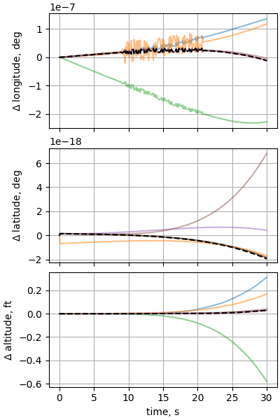

Note
Click here to download the full example code
Case 8: Sphere dropped through a varying wind field
Verifies |
2D winds / wind shear |
Gravitation |
J2 |
Geodesy |
WGS-84 rotating |
Atmosphere |
US 1976 STD |
Winds |
wind varies linearly with altitude |
Vehicle |
Sphere with constant \(C_D\) |
from simupy.block_diagram import BlockDiagram
import simupy_flight
import numpy as np
from nesc_testcase_helper import plot_nesc_comparisons, int_opts, benchmark
from nesc_testcase_helper import ft_per_m, kg_per_slug
Ixx = 3.6 * kg_per_slug / (ft_per_m**2) # slug-ft2
Iyy = 3.6 * kg_per_slug / (ft_per_m**2) # slug-ft2
Izz = 3.6 * kg_per_slug / (ft_per_m**2) # slug-ft2
Ixy = 0.0 * kg_per_slug / (ft_per_m**2) # slug-ft2
Iyz = 0.0 * kg_per_slug / (ft_per_m**2) # slug-ft2
Izx = 0.0 * kg_per_slug / (ft_per_m**2) # slug-ft2
m = 1.0 * kg_per_slug # slug
x = 0.0
y = 0.0
z = 0.0
S_A = 0.1963495 / (ft_per_m**2)
b_l = 1.0
c_l = 1.0
a_l = b_l
lat_ic = 0.0 * np.pi / 180
long_ic = 0.0 * np.pi / 180
h_ic = 30_000 / ft_per_m
V_N_ic = 0.0
V_E_ic = 0.0
V_D_ic = 0.0
psi_ic = 0.0 * np.pi / 180
theta_ic = 0.0 * np.pi / 180
phi_ic = 0.0 * np.pi / 180
omega_X_ic = 0.0 * np.pi / 180
omega_Y_ic = 0.0 * np.pi / 180
omega_Z_ic = 0.0 * np.pi / 180
wy_1 = 70 / ft_per_m
x_1 = h_ic
wy_2 = -20 / ft_per_m
x_2 = 0.0
def linear_winds(t, fx, fy, fz):
winds_out = np.zeros(3)
winds_out[1] = (wy_2 - wy_1) * (fz - x_1) / (x_2 - x_1) + wy_1
return winds_out
planet = simupy_flight.Planet(
gravity=simupy_flight.earth_J2_gravity,
winds=linear_winds,
atmosphere=simupy_flight.atmosphere_1976,
planetodetics=simupy_flight.Planetodetic(
a=simupy_flight.earth_equitorial_radius,
omega_p=simupy_flight.earth_rotation_rate,
f=simupy_flight.earth_f,
),
)
vehicle = simupy_flight.Vehicle(
base_aero_coeffs=simupy_flight.get_constant_aero(CD_b=0.1),
m=m,
I_xx=Ixx,
I_yy=Iyy,
I_zz=Izz,
I_xy=Ixy,
I_yz=Iyz,
I_xz=Izx,
x_com=x,
y_com=y,
z_com=z,
x_mrc=x,
y_mrc=y,
z_mrc=z,
S_A=S_A,
a_l=a_l,
b_l=b_l,
c_l=c_l,
d_l=0.0,
)
BD = BlockDiagram(planet, vehicle)
BD.connect(planet, vehicle, inputs=np.arange(planet.dim_output))
BD.connect(vehicle, planet, inputs=np.arange(vehicle.dim_output))
planet.initial_condition = planet.ic_from_planetodetic(
long_ic, lat_ic, h_ic, V_N_ic, V_E_ic, V_D_ic, psi_ic, theta_ic, phi_ic
)
planet.initial_condition[-3:] = omega_X_ic, omega_Y_ic, omega_Z_ic
with benchmark() as b:
res = BD.simulate(30, integrator_options=int_opts)
Out:
time to simulate: 3.827 s
plot_nesc_comparisons(res, "08")
- 
Total running time of the script: ( 0 minutes 11.541 seconds)